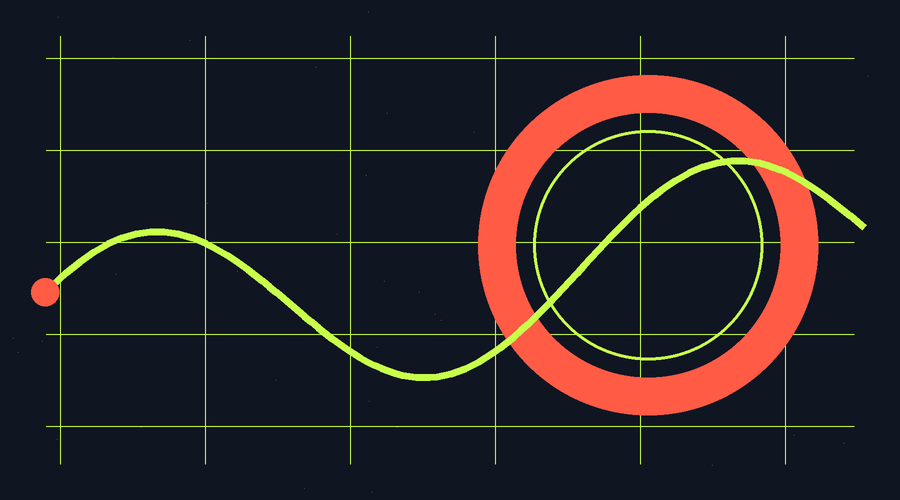

用户研究 · 小团队行动指南
别急着问用户
喜欢什么：
小团队的三次信号捕捉
把观点变成假设，把停顿变成信号，把研究接回下一次产品决定。

| 观点 ≠ 信号 |
一个典型的周一：团队盯着新功能的表现，每个人都有解释：入口不明显、文案不够清楚、用户根本不需要。观点越多，决定反而越慢。 |
问题不是缺观点，而是缺少能推翻观点的信号。
用户研究不等于把用户请进会议室投票。对小团队更有用的做法，是把风险最大的判断，变成一次可以观察、可以比较、可以继续行动的循环。
01
先写下最危险的假设
不要从“用户喜欢什么”开始。喜欢是一种态度，很难直接指导下一步；先写出一个能够被行为推翻的判断。
例如：新用户没有完成首次任务，是因为他在首页没有识别到入口。这个假设可能是错的，但它告诉团队应该观察哪里。
把模糊问题写成四格
| 谁 | 完成什么任务 |
| 遇到什么阻力 | 会看到什么行为 |
可以用四个空格把问题写具体：谁，在完成什么任务时，遇到了什么阻力，我们预计会看到什么行为。
“
如果一次研究只能证明团队是对的，那不是研究，只是在确认偏好。
| 02 | 观察任务， 不急着解释 |
邀请目标用户完成同一个真实任务。只交代任务背景，不讲解界面；把解释暂时放到一边，先记录发生了什么。
| SEE | 他先看到了什么 |
| DO | 他实际做了什么 |
| PAUSE | 他在哪里停顿或返回 |
| SAY | 他用什么原话描述困惑 |
评价可以听，行为更值得追。一个人说“挺清楚”，却连续返回两次，这个矛盾本身就是信号。先保留原始措辞和动作，再判断它是偶然现象，还是值得继续验证的模式。
动效表达“信号被捕捉”的过程；停止播放时，首帧仍保留完整含义。
03
用一个小实验
把信号接回产品
把重复出现的阻力翻译成一个可逆的小改动。一次只改变关键变量，并提前写下判断信号：如果我们的解释成立，用户的哪个行为会发生变化？
| 改动前 | 争论“入口是否明显” |
| 改动后 | 比较用户是否更快开始任务、是否减少返回寻找 |
改动前，团队争论“入口是否明显”；改动后，团队比较“用户是否更快开始任务、是否减少返回寻找”。研究因此不再停在报告里，而是回到下一次产品决定。
一次小实验不能证明所有结论。它的价值，是帮助团队知道该继续投入、换一个解释，还是停止追逐错误方向。
今晚就能开始的最小动作
把最近的争议，
改写成可被推翻的假设。
找出最近一个争议最大的产品判断，把它改写成可被推翻的假设；观察同一个任务；保留原始行为；最后只选择一个可逆改动。
用户研究的价值，不在报告有多厚，而在于让下一次决定离真实用户近一点。